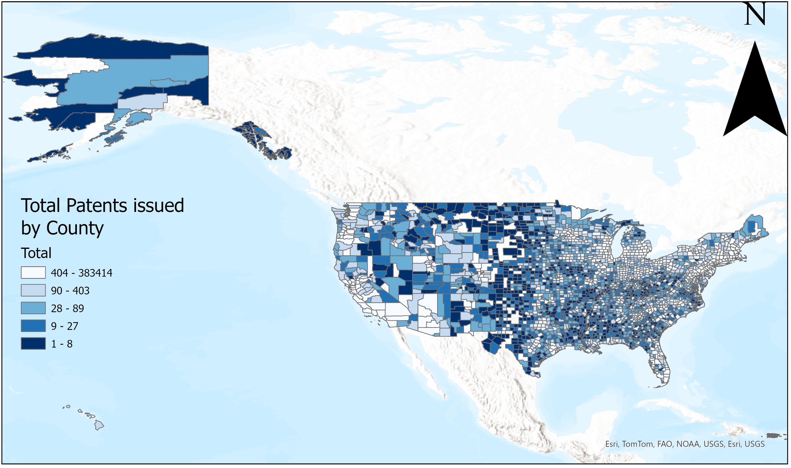

CMSC 436
Data Visualization Individual Portfolio:
Chapter 8 & 9: Maps & Networks
Curation + Reflection
Why did you choose this item to include in your portfolio?
I chose to include maps and networks in my portfolio since I feel they are some of the most widely applicable visualizations, and because in my previous semester I took a course focused on GIS which gave me more experience generating visualizations using maps.
What did you learn from doing this activity/assignment? Anything that surprised or dismayed you? If you learned nothing, what kind of activity/assignment would facilitate learning for you instead?
I learned about a few new types of map visualizations that I had not previously used, like contiguous cartigrams, and about some newer projections which address the misrepresentations from projecting onto a 2D plane better than previous projections I had used. The AuthaGraph shown in class was very interesting to me and I wish I had been able to use it in my semester project, but due to the complexities of mapping GPS coordinates onto it we were unable to.
How might you use these concepts/techniques outside of class (in your research, daily life, job, hobby, etc.)?
The most useful technique from this section was learning how to choose projections in a way that minimizes misrepresentations of data, which will be useful anytime I am either reading or generating a map.
Anything that sparked your curiosity, or other interesting revelations?
I'm curious to see more visualizations which make use of the AuthaGraph projection, since it seems like such a novel projection to me.
Misleading Vis

Refinements/Extensions
Why did you choose this item to refine/extend?
I thought exploring how to make a vis subtly misleading could be fun, one that you have to really look close at to figure out it's misleading but that makes huge misrepresentations of real data
What did you learn from refining this activity/assignment? Anything that surprised or dismayed you? If you learned nothing, what kind of activity/assignment would facilitate learning for you instead?
I learned how easily someone could mistakenly make a misleading vis, and how easy it is to turn what would be an informational one into a misleading one, which could be done accidentally or maliciously.
How might you use these concepts/techniques outside of class (in your research, daily life, job, hobby, etc.)?
I can use these concepts to develop better visualizations in the future and to avoid making easy mistakes that can cause a miscommunication by my audience.
Anything that sparked your curiosity, or other interesting revelations?
I'm curious as to how often misleading visualizations are used on purpose to further an agenda, compared to how often they are used by accident.
Marks & Channels
Refinements/Extensions
Why did you choose this item to refine/extend?
I felt that marks and channels were one of the concepts I best understood in the course and that the provided a good summary of how to read into visualizations.
What did you learn from refining this activity/assignment? Anything that surprised or dismayed you? If you learned nothing, what kind of activity/assignment would facilitate learning for you instead?
I learned about how many attributed are encoded and how the ways to effectively encode attributes differs greatly based on what the intention is and what is being displayed.
How might you use these concepts/techniques outside of class (in your research, daily life, job, hobby, etc.)?
I can use these concepts to interpret visualizations I see outside of class and to think more critically about how I generate my own visuals.
Anything that sparked your curiosity, or other interesting revelations?
I'm curious how long marks and channels have been the predominate way of interpreting visualizations and what caused that line of thought to become widespread.
Assignment 1
Curation + Reflection
Why did you choose this item to include in your portfolio?
I felt that this was one of the activities we did that would best show how my knowledge of visualizations developed through the course, since my background was more limitted when we did this assignment
What did you learn from doing this activity/assignment? Anything that surprised or dismayed you? If you learned nothing, what kind of activity/assignment would facilitate learning for you instead?
I learned how difficult it can be to learn new visualization tools, and some steps to take to generate a tutorial which effectively teaches how to use new tools.
How might you use these concepts/techniques outside of class (in your research, daily life, job, hobby, etc.)?
If I am in a position to teach new users how to begin using a tool or piece of software my experience in this assignment will assist with that.
Anything that sparked your curiosity, or other interesting revelations?
I am curious how other people go about generating their tutorials for new tools, and what practices could assist in creating effective tutorials.